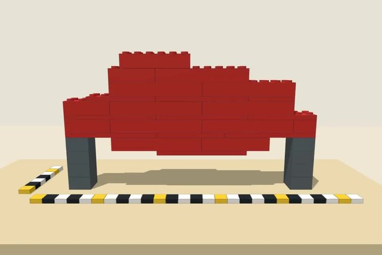

About关于
Education教育背景
Harbin Institute of Technology (Shenzhen)哈尔滨工业大学（深圳）
B.Eng. in Computer Science and Technology本科 · 计算机科学与技术
Expected Jun 2028预计 2028.06 毕业
Research研究
-
Space Track: How Multimodal Agents Perceive, Update, and Act in Changing 3D Worlds
Chenglong Shi*, Zekai Yuan*, Yue Song, Jon Pu, Will Wu · 2026
Five first-person 3D worlds that change as the agent acts, with 59 long-horizon tasks (15 counterfactual controls). The best of 9 frontier models finishes only 55%: agents say they have looped back to the same floor, yet in 15 of 18 failures call a reachable room impossible. A ground-truth map lifts success from 25% to 47%.5 个随行动变化的第一人称三维世界、59 个长程任务（含 15 个反事实对照）。9 个前沿模型最强只完成 55%：模型能说出“绕回了原楼层”，却在 15/18 局失败里把可达目标判为不可达；给真值地图后成功率 25% → 47%。

-
SpaceAct: Benchmarking 3D Spatial and Temporal Reasoning via Closed-Loop Action and Active Perception
Chenglong Shi*, Zekai Yuan*, Yue Song, Jon Pu, Will Wu · 2026
RGB only, no coordinates: Lego building and mechanical puzzles within 100 steps, 108 solver-verified instances in 36 families, 12 models evaluated. Controlled injections show the bottleneck is estimating 3D geometry from 2D views, not planning.只给渲染画面、不给坐标，在最多 100 步内完成乐高搭建与机械解谜，共 36 题族 / 108 道求解器验证题，跑测 12 个模型。受控实验表明瓶颈不在规划，而在从二维画面估准三维几何。

-
Turning Failed Agent Trajectories into SFT & RL Training Signals把智能体失败轨迹转成 SFT 与 RL 的训练改进项
An attribution tool on Agent Trace compares the in-house model with frontier models episode by episode. Four failure modes (misjudged distance and angle, no external memory, no recovery after errors, no motion-cycle inference) became a post-training plan: targeted data, recovery trajectories for SFT and step-level RL penalties.基于 Agent Trace 搭建轨迹归因工具，逐局对比自研模型与前沿模型，定位四类死因：距离 / 转角估不准、长程探索不记状态、报错后不排查、不会推算运动周期；据此给出补数据、SFT 纠错样本与 RL 步级惩罚的后训练方案。
Experience经历
-
2026.08 — Present至今
Evaluation & Benchmark Intern · Tencent, Foundation Model Dept.评测 Benchmark 实习 · 腾讯 · 基础模型部
Co-first author on the two 3D benchmarks above; I own visual benchmarks and automated grading for Hunyuan’s multimodal models.两项三维空间基准共同一作；负责混元多模态模型的视觉出题与自动判分。
- EyeBench-HY12 parametric generators turn user-reported blind spots into puzzles with programmatic answers, split into three tiers by four models.从社区翻车案例反推感知盲区，12 个参数化生成器自动出题、程序算真值，四个模型筛出三档难度。
- Rubric JudgeThe generator reads seven responses at once and every rubric item must be grounded in at least one of them; a judge re-ranks each item and sends it back if its order disagrees. 93.9% agreement with human graders.生成模型同时看 7 份作答写 Rubric，每条须在至少一份作答中有依据；裁判逐条复核偏序，与生成方不一致即打回；机评-人评一致率 93.9%。
- Exploring探索中Sci3D-Bench: 3D questions from protein structures and whole-body CT; source files stay outside the sandbox, so models must use a viewer.Sci3D-Bench：蛋白结构与全身 CT 三维题，源文件锁在沙箱外，只能操作查看器作答。
-
2026.04 — 2026.08
Agent Evaluation & Product Intern · ByteDance, Volcano EngineAgent 评测/产品实习 · 字节跳动 · 火山引擎
Built a LangGraph state-machine evaluator on my own (web fact-checking, rubric scoring, low-confidence hand-off): machine–human agreement rose from 60% to 85% and a release evaluation fell from 7 days to 1. Co-defined routing and acceptance for 15 industries × 9 intents.基于 LangGraph 独立搭建状态机评测系统（联网核验事实、逐条按 Rubric 判分、低置信度转人工），线上机评-人评一致率 60% → 85%，版本评测 7 天 → 1 天；负责 15 行业 × 9 意图的路由定义与验收基准。
-
2025.12 — 2026.03
AI NPC Agent · ParametrixAI NPC Agent · 超参数科技
Built game NPCs with long-term memory on Python, Redis and Milvus (an affinity-driven companion and a haggling merchant) for 3 client demos; owned v1.0 acceptance of an agent workflow platform and fixed 30+ P0/P1 bugs.用 Python、Redis 与 Milvus 搭建带长期记忆的游戏 NPC（好感度陪伴、动态议价交易员），支撑 3 家客户演示；负责智能体编排平台 V1.0 上线验收，修复 30+ 项 P0/P1 缺陷。
Projects作品
-
Hseek (New 来): campus matching platform哈机觅 Hseek（New 来）：校园匹配平台
Personal startup · founder & solo full-stack developer · 2026.03 — present个人创业项目 · 创始人 / 独立全栈开发 · 2026.03 至今
A weekly matching site for Shenzhen students. With no backend experience, I designed, built and shipped it alone in two days: campus verification, a questionnaire, weighted stable matching and mutual opt-in.面向深圳高校的按周匹配网站。零后端基础，2 天独立完成设计、开发与上线：校园认证、偏好问卷、加权稳定匹配与双向确认。
500+ sign-ups on day one, 2,000+ users within 5 days上线首日注册 500+，5 天覆盖 2,000+ 用户

-
Ecure: intervention robot for autistic childrenEcure 孤独症儿童智能干预机器人
iF DESIGN AWARD 2025 · Professional Concept: Product Design · team memberiF DESIGN AWARD 2025（专业概念：产品设计）· 团队成员
A tabletop companion robot that replaces tablet screens with AR projected on the table and adapts training to facial and touch cues. Chosen from nearly 11,000 entries; featured in the iF Design Trend Report 2025.用桌面 AR 投影代替平板屏幕的孤独症儿童伴学机器人，按表情与触觉反馈调整训练强度；从近 11,000 件作品中获奖，入选 iF 2025 设计趋势报告。

Life生活
Every trip becomes a magazine cover.每段旅程，都会自己排版做一期杂志封面。


Contact联系
Feel free to reach out about multimodal evaluation, agent benchmarks, post-training data, or internships.欢迎交流多模态评测、智能体基准、后训练数据，或实习与合作机会。
cdjabah13@gmail.com